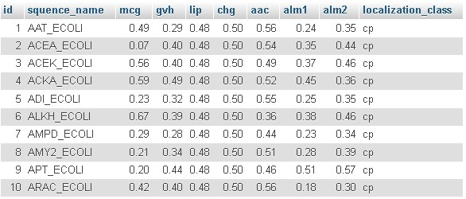
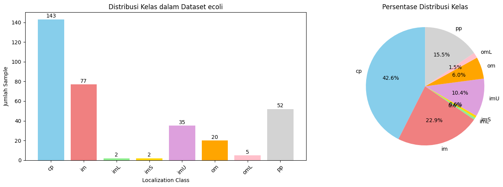
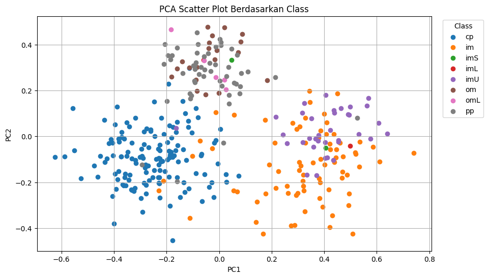
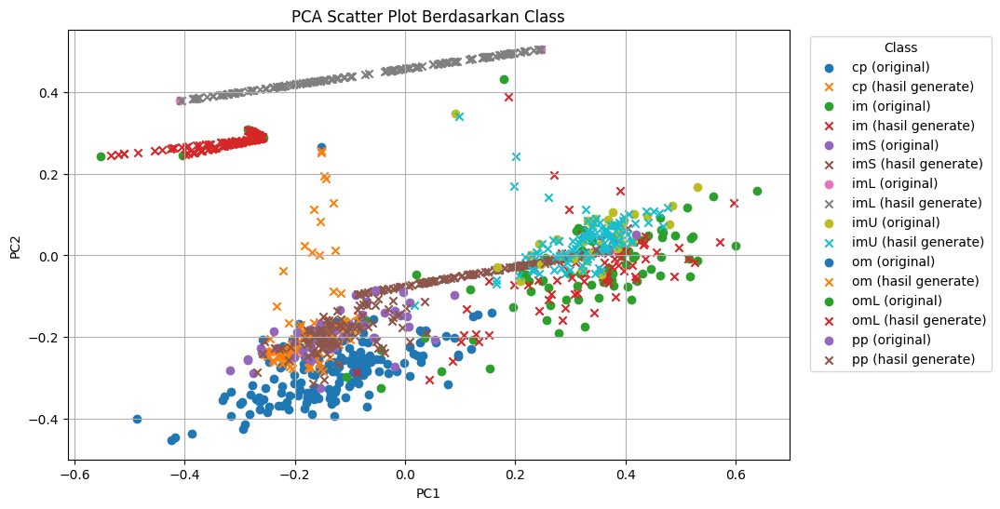
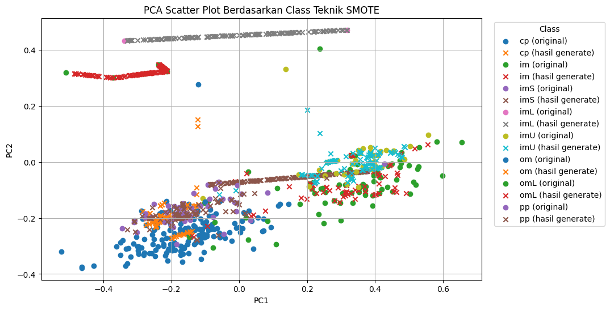
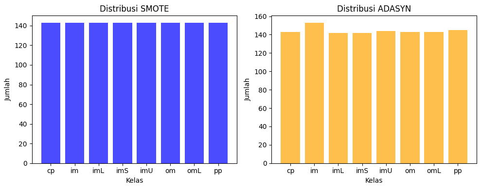

Oversampling (Ecoli)#
Data Ditarik Ke Dalam MySQL#

import pandas as pd
import numpy as np
import matplotlib.pyplot as plt
import seaborn as sns
from sqlalchemy import create_engine
from sklearn.preprocessing import StandardScaler
from sklearn.decomposition import PCA
from collections import Counter
from imblearn.over_sampling import ADASYN
from imblearn.over_sampling import SMOTE
engine = create_engine("mysql+pymysql://root:@localhost/psd")
query = "SELECT mcg, gvh, lip, chg, aac, alm1, alm2, localization_class FROM ecoli"
df = pd.read_sql(query, engine)
C:\Users\USERB-PC\AppData\Local\Temp\ipykernel_14320\2899852861.py:3: UserWarning: pandas only supports SQLAlchemy connectable (engine/connection) or database string URI or sqlite3 DBAPI2 connection. Other DBAPI2 objects are not tested. Please consider using SQLAlchemy.
df = pd.read_sql(query, engine)
---------------------------------------------------------------------------
AttributeError Traceback (most recent call last)
Cell In[2], line 3
1 engine = create_engine("mysql+pymysql://root:@localhost/psd")
2 query = "SELECT mcg, gvh, lip, chg, aac, alm1, alm2, localization_class FROM ecoli"
----> 3 df = pd.read_sql(query, engine)
File ~\AppData\Local\Programs\Python\Python39\lib\site-packages\pandas\io\sql.py:708, in read_sql(sql, con, index_col, coerce_float, params, parse_dates, columns, chunksize, dtype_backend, dtype)
706 with pandasSQL_builder(con) as pandas_sql:
707 if isinstance(pandas_sql, SQLiteDatabase):
--> 708 return pandas_sql.read_query(
709 sql,
710 index_col=index_col,
711 params=params,
712 coerce_float=coerce_float,
713 parse_dates=parse_dates,
714 chunksize=chunksize,
715 dtype_backend=dtype_backend,
716 dtype=dtype,
717 )
719 try:
720 _is_table_name = pandas_sql.has_table(sql)
File ~\AppData\Local\Programs\Python\Python39\lib\site-packages\pandas\io\sql.py:2728, in SQLiteDatabase.read_query(self, sql, index_col, coerce_float, parse_dates, params, chunksize, dtype, dtype_backend)
2717 def read_query(
2718 self,
2719 sql,
(...)
2726 dtype_backend: DtypeBackend | Literal["numpy"] = "numpy",
2727 ) -> DataFrame | Iterator[DataFrame]:
-> 2728 cursor = self.execute(sql, params)
2729 columns = [col_desc[0] for col_desc in cursor.description]
2731 if chunksize is not None:
File ~\AppData\Local\Programs\Python\Python39\lib\site-packages\pandas\io\sql.py:2662, in SQLiteDatabase.execute(self, sql, params)
2660 raise TypeError("Query must be a string unless using sqlalchemy.")
2661 args = [] if params is None else [params]
-> 2662 cur = self.con.cursor()
2663 try:
2664 cur.execute(sql, *args)
AttributeError: 'Engine' object has no attribute 'cursor'
INFORMASI DATASET#
print("\nInfo Dataset:")
df
Info Dataset:
| mcg | gvh | lip | chg | aac | alm1 | alm2 | localization_class | |
|---|---|---|---|---|---|---|---|---|
| 0 | 0.49 | 0.29 | 0.48 | 0.5 | 0.56 | 0.24 | 0.35 | cp |
| 1 | 0.07 | 0.40 | 0.48 | 0.5 | 0.54 | 0.35 | 0.44 | cp |
| 2 | 0.56 | 0.40 | 0.48 | 0.5 | 0.49 | 0.37 | 0.46 | cp |
| 3 | 0.59 | 0.49 | 0.48 | 0.5 | 0.52 | 0.45 | 0.36 | cp |
| 4 | 0.23 | 0.32 | 0.48 | 0.5 | 0.55 | 0.25 | 0.35 | cp |
| ... | ... | ... | ... | ... | ... | ... | ... | ... |
| 331 | 0.74 | 0.56 | 0.48 | 0.5 | 0.47 | 0.68 | 0.30 | pp |
| 332 | 0.71 | 0.57 | 0.48 | 0.5 | 0.48 | 0.35 | 0.32 | pp |
| 333 | 0.61 | 0.60 | 0.48 | 0.5 | 0.44 | 0.39 | 0.38 | pp |
| 334 | 0.59 | 0.61 | 0.48 | 0.5 | 0.42 | 0.42 | 0.37 | pp |
| 335 | 0.74 | 0.74 | 0.48 | 0.5 | 0.31 | 0.53 | 0.52 | pp |
336 rows × 8 columns
ANALISIS DISTRIBUSI KELAS#
class_counts = df['localization_class'].value_counts().sort_index()
print("Distribusi kelas:")
print(class_counts)
class_percentages = df['localization_class'].value_counts(normalize=True).sort_index() * 100
print(f"\nPersentase distribusi kelas:")
for cls, count, pct in zip(class_counts.index, class_counts.values, class_percentages.values):
print(f"{cls}: {count} samples ({pct:.1f}%)")
max_class_pct = class_percentages.max()
min_class_pct = class_percentages.min()
imbalance_ratio = max_class_pct / min_class_pct
print(f"\nANALISIS KESEIMBANGAN KELAS")
print(f"Kelas terbanyak: {class_percentages.idxmax()} ({max_class_pct:.1f}%)")
print(f"Kelas tersedikit: {class_percentages.idxmin()} ({min_class_pct:.1f}%)")
print(f"Rasio ketidakseimbangan: {imbalance_ratio:.1f}:1")
if imbalance_ratio > 3:
balance_status = "TIDAK SEIMBANG (Imbalanced)"
elif imbalance_ratio > 1.5:
balance_status = "SEDIKIT TIDAK SEIMBANG"
else:
balance_status = "SEIMBANG (Balanced)"
print(f"Status: {balance_status}")
Distribusi kelas:
localization_class
cp 143
im 77
imL 2
imS 2
imU 35
om 20
omL 5
pp 52
Name: count, dtype: int64
Persentase distribusi kelas:
cp: 143 samples (42.6%)
im: 77 samples (22.9%)
imL: 2 samples (0.6%)
imS: 2 samples (0.6%)
imU: 35 samples (10.4%)
om: 20 samples (6.0%)
omL: 5 samples (1.5%)
pp: 52 samples (15.5%)
ANALISIS KESEIMBANGAN KELAS
Kelas terbanyak: cp (42.6%)
Kelas tersedikit: imL (0.6%)
Rasio ketidakseimbangan: 71.5:1
Status: TIDAK SEIMBANG (Imbalanced)
VISUALISASI DISTRIBUSI KELAS#
plt.figure(figsize=(15, 5))
plt.subplot(1, 2, 1)
bars = plt.bar(class_counts.index, class_counts.values,
color=['skyblue', 'lightcoral', 'lightgreen', 'gold', 'plum', 'orange', 'pink', 'lightgray'])
plt.xlabel('Localization Class')
plt.ylabel('Jumlah Sample')
plt.title('Distribusi Kelas dalam Dataset ecoli')
plt.xticks(rotation=45)
for bar, count in zip(bars, class_counts.values):
plt.text(bar.get_x() + bar.get_width()/2, bar.get_height() + 0.5,
str(count), ha='center', va='bottom')
# Pie chart
plt.subplot(1, 2, 2)
colors = ['skyblue', 'lightcoral', 'lightgreen', 'gold', 'plum', 'orange', 'pink', 'lightgray']
plt.pie(class_counts.values, labels=class_counts.index, autopct='%1.1f%%',
colors=colors[:len(class_counts)], startangle=90)
plt.title('Persentase Distribusi Kelas')
plt.tight_layout()
plt.show()

Data dalam Scatter Plot Menggunakan PCA#
X = df.drop(columns=["localization_class"])
y = df["localization_class"]
# scaler = StandardScaler()
# scaled_data = scaler.fit_transform(X)
pca = PCA(n_components=2)
pca_result = pca.fit_transform(X)
data_pca = pd.DataFrame(pca_result, columns=['PC1', 'PC2'])
data_pca['localization_class'] = y
data_pca.to_csv('pca_ecoli.csv', index=False)
plt.figure(figsize=(10,6))
for label in data_pca['localization_class'].unique():
subset = data_pca[data_pca['localization_class'] == label]
plt.scatter(subset['PC1'], subset['PC2'], label=label)
plt.xlabel("PC1")
plt.ylabel("PC2")
plt.title("PCA Scatter Plot Berdasarkan Class")
plt.legend(title="Class", bbox_to_anchor=(1.02, 1), loc='upper left')
plt.grid()
plt.show()
print("Data setelah di transformasi PCA : ")
data_pca

Data setelah di transformasi PCA :
| PC1 | PC2 | localization_class | |
|---|---|---|---|
| 0 | -0.285601 | -0.035274 | cp |
| 1 | -0.290838 | -0.330159 | cp |
| 2 | -0.104676 | 0.015248 | cp |
| 3 | -0.087943 | 0.122218 | cp |
| 4 | -0.366268 | -0.210366 | cp |
| ... | ... | ... | ... |
| 331 | 0.084233 | 0.274803 | pp |
| 332 | -0.139026 | 0.274116 | pp |
| 333 | -0.111904 | 0.187103 | pp |
| 334 | -0.106204 | 0.178851 | pp |
| 335 | 0.108764 | 0.281129 | pp |
336 rows × 3 columns
Lakukan penyeimbangan data menggunakan ADASYN dan SMOTE#
Preprocessing Penyeimbangan Data Menggunakan ADASYN#
nt = X
ns = y
temp = sorted(class_counts)
for i in range(0, 7):
n = temp[i] - 1
nt, ns = ADASYN(n_neighbors=n, sampling_strategy='minority').fit_resample(nt, ns)
df_resampled = pd.DataFrame(nt, columns=X.columns)
df_resampled["class"] = ns
df_resampled.to_csv("hasil_oversampling_ADASYN.csv", index=False)
print(f"{sorted(Counter(ns).items())}")
[('cp', 143), ('im', 153), ('imL', 142), ('imS', 142), ('imU', 144), ('om', 143), ('omL', 143), ('pp', 145)]
pca = PCA(n_components=2)
pca_result = pca.fit_transform(nt)
data_pca = pd.DataFrame(pca_result, columns=['PC1', 'PC2'])
data_pca['localization_class'] = ns
data_pca['is_generated'] = ['original'] * len(X) + ['synthetic'] * (len(nt) - len(X))
plt.figure(figsize=(10,6))
for label in data_pca['localization_class'].unique():
subset_original = data_pca[(data_pca['localization_class'] == label) & (data_pca['is_generated'] == 'original')]
subset_synthetic = data_pca[(data_pca['localization_class'] == label) & (data_pca['is_generated'] == 'synthetic')]
plt.scatter(subset_original['PC1'], subset_original['PC2'], label=f"{label} (original)", marker='o')
plt.scatter(subset_synthetic['PC1'], subset_synthetic['PC2'], label=f"{label} (hasil generate)", marker='x')
plt.xlabel("PC1")
plt.ylabel("PC2")
plt.title("PCA Scatter Plot Berdasarkan Class")
plt.legend(title="Class", bbox_to_anchor=(1.02, 1), loc='upper left')
plt.grid()
plt.show()

Preprocessing Penyeimbangan Data Menggunakan SMOTE#
smote = SMOTE(random_state=42, k_neighbors=1)
X_res, y_res = smote.fit_resample(X, y)
df_resampled = pd.DataFrame(X_res, columns=X.columns)
df_resampled["class"] = y_res
df_resampled.to_csv("hasil_oversampling_SMOTE.csv", index=False)
print(f"{sorted(Counter(y_res).items())}")
[('cp', 143), ('im', 143), ('imL', 143), ('imS', 143), ('imU', 143), ('om', 143), ('omL', 143), ('pp', 143)]
pcba = PCA(n_components=2)
pca_result = pcba.fit_transform(X_res)
data_pca = pd.DataFrame(pca_result, columns=['PC1', 'PC2'])
data_pca['localization_class'] = y_res
data_pca['is_generated'] = ['original'] * len(X) + ['synthetic'] * (len(X_res) - len(X))
plt.figure(figsize=(10,6))
for label in data_pca['localization_class'].unique():
subset_original = data_pca[(data_pca['localization_class'] == label) & (data_pca['is_generated'] == 'original')]
subset_synthetic = data_pca[(data_pca['localization_class'] == label) & (data_pca['is_generated'] == 'synthetic')]
plt.scatter(subset_original['PC1'], subset_original['PC2'], label=f"{label} (original)", marker='o')
plt.scatter(subset_synthetic['PC1'], subset_synthetic['PC2'], label=f"{label} (hasil generate)", marker='x')
plt.xlabel("PC1")
plt.ylabel("PC2")
plt.title("PCA Scatter Plot Berdasarkan Class Teknik SMOTE")
plt.legend(title="Class", bbox_to_anchor=(1.02, 1), loc='upper left')
plt.grid()
plt.show()

Perbandingan penyeimbangan data menggunakan SMOTE dan ADASYN#
data = np.array(sorted(Counter(y_res).items()))
kelas, dist = np.hsplit(data, 2)
kelas = kelas.ravel().tolist()
dist = dist.astype(int).ravel().tolist()
data2 = np.array(sorted(Counter(ns).items()))
kelas2, dist2 = np.hsplit(data2, 2)
kelas2 = kelas2.ravel().tolist()
dist2 = dist2.astype(int).ravel().tolist()
fig, (ax1, ax2) = plt.subplots(1, 2, figsize=(10, 4))
ax1.bar(kelas, dist, color="blue", alpha=0.7)
ax1.set_title("Distribusi SMOTE")
ax1.set_xlabel("Kelas")
ax1.set_ylabel("Jumlah")
ax2.bar(kelas2, dist2, color="orange", alpha=0.7)
ax2.set_title("Distribusi ADASYN")
ax2.set_xlabel("Kelas")
ax2.set_ylabel("Jumlah")
plt.tight_layout()
plt.show()
